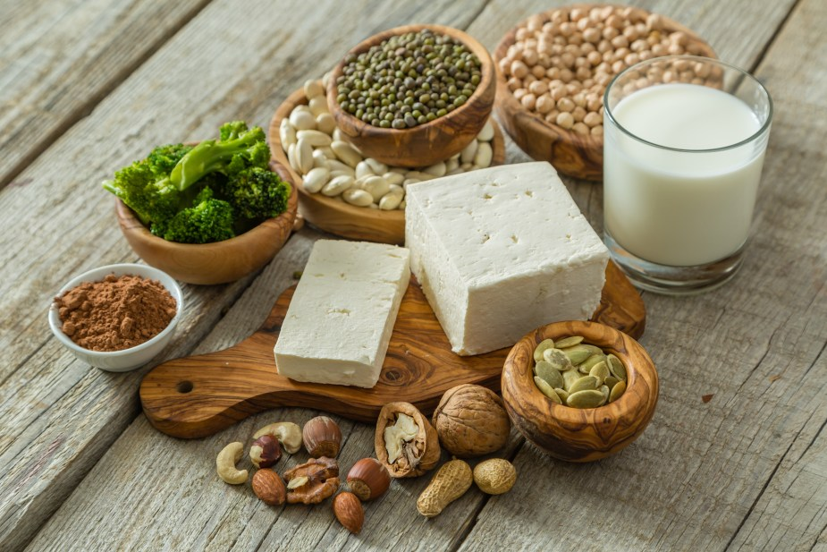
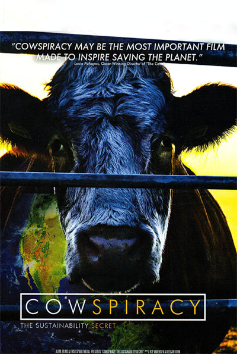
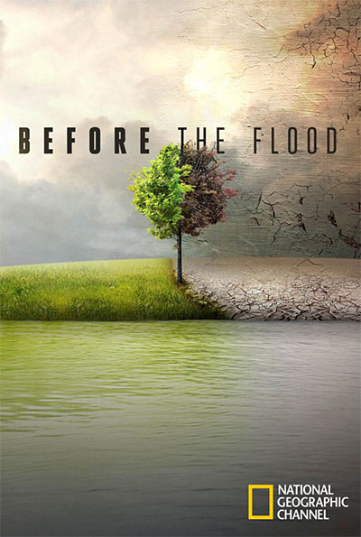
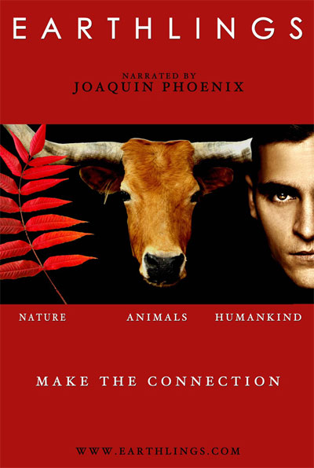
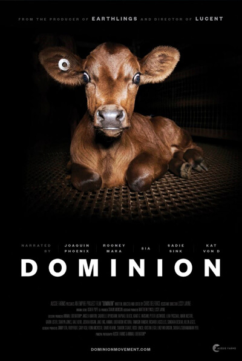
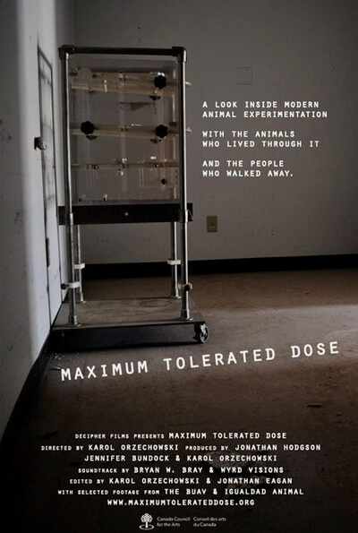
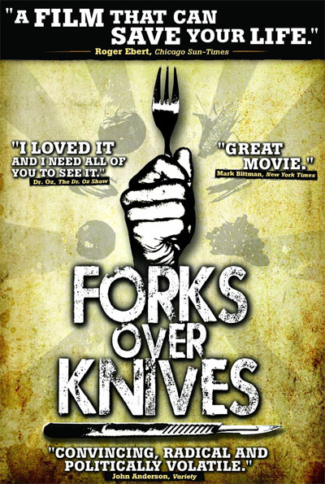
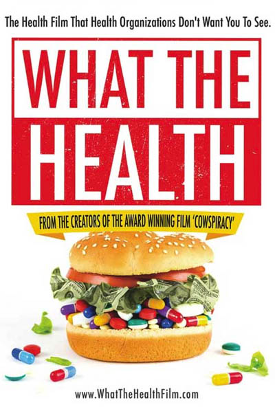
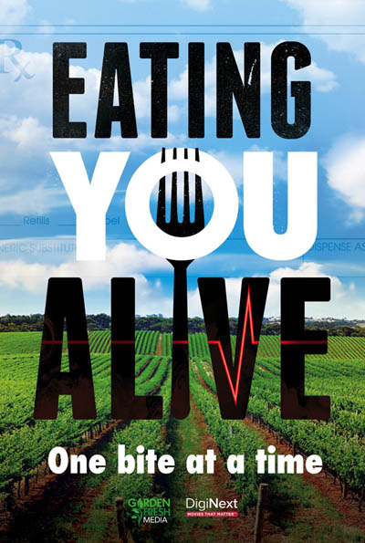

Vad är vegansk mat?
Vegansk mat består av mat från växtriket utan något inslag av mat från djurriket.
Den innehåller alltså varken kött, fisk, skaldjur, mjölkprodukter, ägg eller honung. Många undviker också gelatin, som utvinns ur bindväven hos djur.
Ersätt köttet och fisken
När man utesluter en så stor grupp av livsmedel som all mat från djurriket är det viktigt att känna till
vilken mat från växtriket som innehåller den näring man går miste om – och ersätta kött, fisk, ägg och
mjölk med den. Generellt gäller att ju fler livsmedel som plockas bort, desto högre krav ställs det på
att den mat man väl äter innehåller tillräckligt med näring. De näringsämnen som är viktigast att hålla
koll på är vitamin B12, D-vitamin, riboflavin, järn, zink, kalcium, selen, jod, omega 3-fetter och
protein.
Att gå över helt eller delvis till vegansk kost kan hälpa på flera olika sätt och det finns
många anledningar att välja en vegansk kost. Här kan du läsa om våra matvanors påvärkan
på miljön, för hälsan och på djurindustrin.

Några proteinkällor från växtriket
För miljön
En 90-gramsburgare kräver en åtgång av 1740 liter vatten, vilket är den mängd vatten som går åt om
du låter duschen stå på i nästan 2 och en halv timme (!).
Köttindustrins nötkreatur producerar 567,8 miljarder liter metan per dag (metan är en mycket mer
potent växthusgas än CO2).
En hektar mark kan producera mer än 1000 gånger mer växtbaserad mat än av kött.
Varje dag som vegan sparar du över 4000 liter vatten, 20 kg sädesslag, 2,8 m2 regnskog, 9 kg CO2,
och ett djurs liv. Tänk på detta nästa gång du väljer vad du ska lägga på din tallrik.
Dokumentärer miljö
Om du vill ha mer information om hur djurindustrin dramatiskt bidrar
till att skada vår miljö kan du kolla upp dessa dokumentärer:


För djurens skull
Visst känns det lite konstigt att kalla sig djurvän men samtidigt äta dem och stödja industrier som tjänar sina pengar på att utnyttja och döda dem? Det går inte riktigt ihop. En ko eller gris är i grund och botten inte alls annorlunda från den hund eller katt du älskar,
men den ena är okej att döda och äta men den andra ska klappas och kelas med?
I Sverige slaktas drygt 85 miljoner landdjur varje år för att producera mat till oss människor, helt i onödan.
Vi behöver inte animalisk föda för att tillgodose våra näringsbehov.
Dokumentärer djurindustrin
Om du vill ha mer information om hur djurindustrin faktiskt ser ut och öka din förståelse för varför
så många människor är veganer för djures skull kan du kolla upp dessa dokumentärer:



För hälsan
Sett till vad vi idag vet om kost och hälsa är resultaten föga förvånande. Om hela jordens befolkning
skulle följa globala kostråd liknande dem från Livsmedelsverket skulle 5,1 miljoner förtida dödsfall
kunna förebyggas varje år pga minskad förekomst av cancer, hjärtkärlsjukdom, diabetes typ 2 och stroke.
Om vi i stället skulle anamma en vegetarisk kost skulle 7,3 miljoner förtida dödsfall kunna
förebyggas och för en vegansk kost är siffran 8,1 miljoner. Hundratals till tusentals miljarder
kronor kommer även att sparas i minskade vårdkostnader. Forskarna understryker även att dessa
siffror är underskattningar sett till befintliga data.
Är det därmed fastställt att en vegansk kost är bäst för vår hälsa? Det korta svaret på den frågan är ja.
Det förutsätter emellertid att den som väljer en vegansk kost centrerar
sin kost kring hela vegetabilier som frukt, grönsaker, baljväxter, fullkorn, bär, nötter och frön.
Dokumentärer för hälsan
Om du vill ha mer information om hur en vegansk kost kan vara positivt för din hälsa kan du kolla upp
dessa dokumentärer:


